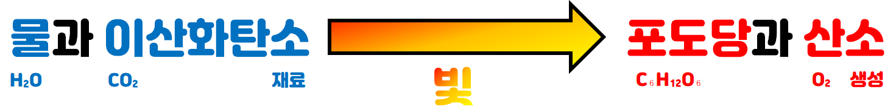

식물의 광합성
광합성
식물이 빛에너지를 이용하여 스스로 양분을 만드는 과정

광합성의 산물
식물은 광합성을 해서 포도당이 만들어지며, 그 과정에서 산소도 함께 만들어진다.
식물이 포도당을 저장할 때는 녹말로 변환하여 저장한다.
광합성이 일어나기 위한 기본적인 조건
일어나는 장소 - 엽록체
일어나는 시간 - 낮 (빛이 있을 때)
필요한 물질 - 물, 이산화탄소
생성되는 물질 - 포도당, 산소